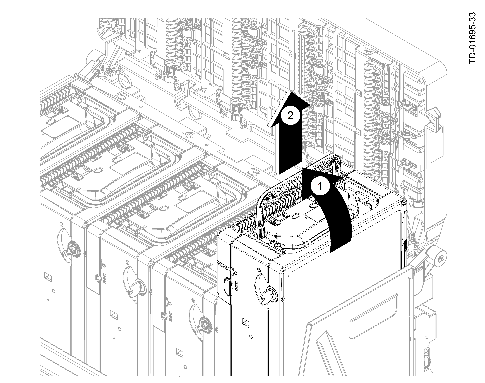

Removal
- Lift the handle of the chest horizontal transport to open the transport (Opening the Chest Horizontal Transport).
Opening the Chest Horizontal Transport 1
Lift the handle of the chest horizontal transport
- Take note of the media channels within the RM4V lower module that are labeled one through five (Media Channels).
- NOTICE

The All-In cassette can be inserted into any of the five media channels, however it is primarily used in channel 5.
Media Channels 1
Channel 5 (usually the All-in Cassette)
2
Channel 4
3
Channel 3
4
Channel 2
5
Channel 1
- Lift a cassette by its handle and pull it up and away from the back wall to remove it from the cassette channel (Lifting the Cassette Out of the Media Channel).
 Lifting the Cassette Out of the Media Channel 1
Lift the cassette handle
2
Lift cassette out of media channel
- Take the cassette to a secure location. Do not lay the cassette on top of the chest horizontal transport to service it.